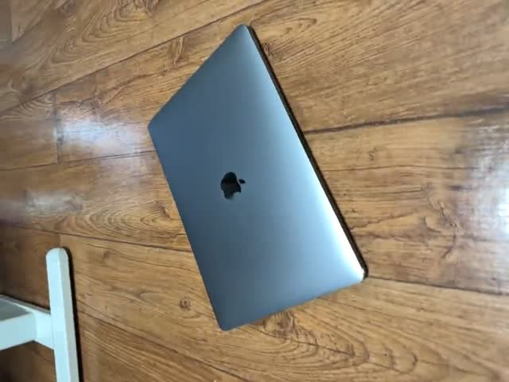
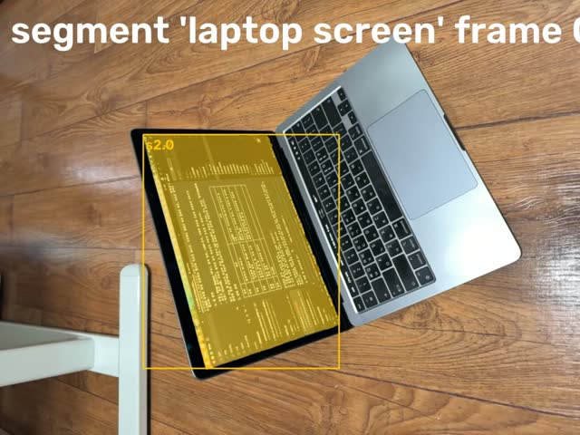
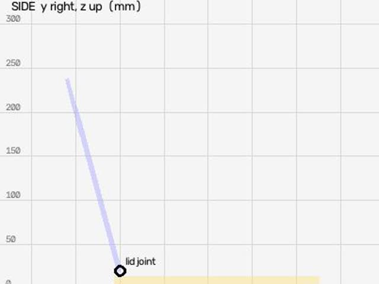
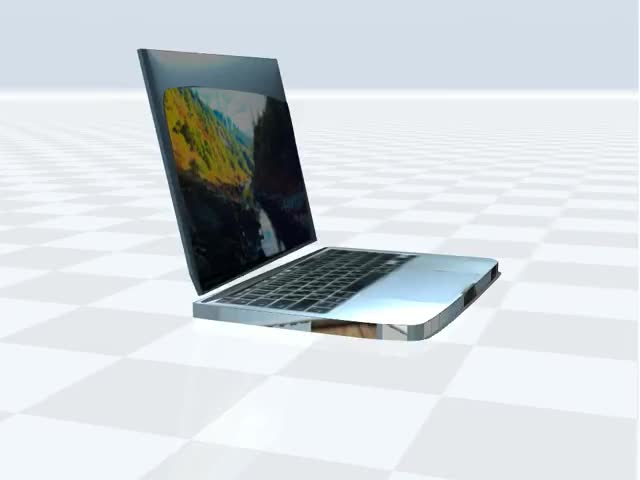
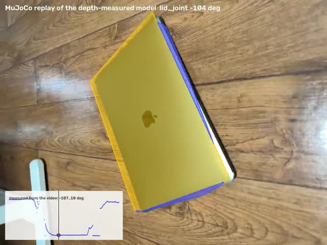
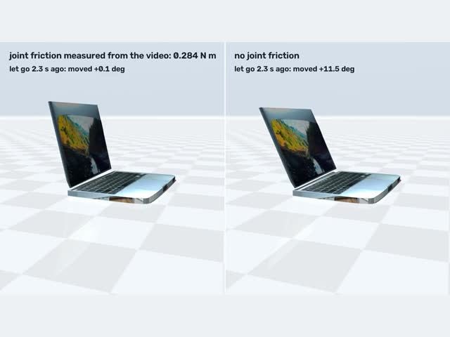
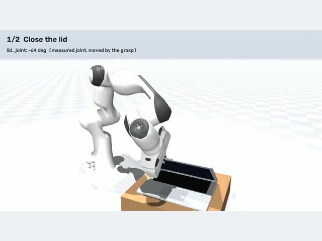

What it does
Robotics developers who need a simulation model of a real object (a laptop lid, a desk lamp, a drawer, a microwave door) usually model it by hand: guess the hinge, guess the limits, tweak until it looks right. Video2URDF measures it instead. Film the object being opened and closed; a Muse Spark agent finds the parts with SAM 3.1, tracks them, fits each joint by least squares, writes URDF and MJCF, replays the model in MuJoCo from the camera's own viewpoint and checks the overlay, frame by frame, before it reports. A simulated Franka Panda then grasps and works the measured model, and URDF Doctor checks a URDF you already have against a video.
Every model called at runtime is a Meta model; --open-weights runs the same pipeline on Muse Spark Open and SAM weights, --glimmer on Muse Glimmer 30B served by us.
Every picture below is from one real run: the iPhone LiDAR laptop, first tab of the viewer.

Film it. Open and close the object in front of a phone: any phone video, or an iPhone LiDAR capture (Stray Scanner) for metric depth. A plain video gets its scale from an ID-1 card in view or from the object's usual size. Meta model: Muse Spark watches the whole video and names the parts.
SAM 3.1 tracks the parts. Muse Spark writes a noun prompt for each part (“laptop lid”); SAM 3.1 finds each part on key frames, then tracks all of them through the video with stable IDs. Meta models: Muse Spark, SAM 3.1.
The joints are measured. Hinge or slide: axis, position and limits, by least squares from the parts' relative motion. With depth, a hinge is where the lid's and the base's planes cross; a lamp's rods are 3D lines; an object that never moves is carved from its views. Our code. For a plain video, MapAnything estimates the depth (experimental).
URDF and MJCF are written. Each link's shape comes from its silhouettes (2D) or its depth (LiDAR), painted with the video; the measured shapes are the collision geometry. Our code.
It checks itself against the video. MuJoCo replays the model from the phone's own camera pose on every frame and scores it against SAM's masks. Muse Spark watches that replay and re-segments, re-tracks and refits; it can't finish over the fit's own warnings without being refused once, and every run endschecks_passed,needs_revieworfailed. See it on the side-view laptop: the base was lost on 89 of 408 frames, so it re-segmented, re-tracked and refit. Meta model: Muse Spark.
Physics and a clean look. Muse Spark judges each link's material and mass; joint friction is measured where a part stands still with no hand on it, and checked by letting the model go in MuJoCo. Muse Spark and Muse Spark Open each propose a visual built from primitives, scored over the video; SAM 3D Objects makes a realistic mesh, checked against the measured depth. Meta models: Muse Spark, Muse Spark Open, SAM 3D Objects.
A simulated robot uses it. A Franka Panda in MuJoCo grasps the measured object and works it: closes and reopens a lid, pulls a drawer out by its handle and pushes it back, swings a lamp's arm, carries a mouse. MuJoCo, with the Panda from MuJoCo Menagerie.
The models in 3D
Eight objects, each measured from one video of the real thing (six iPhone LiDAR captures, two side-view phone videos). The phone video and the measured model play together: the model's joints follow the video. Under the model: the downloads, what was measured and what was estimated, and every turn the Meta models took to build it.
Pick an object, then press Model over video or Robot uses it. Drag the 3D view to orbit; each joint has a slider.
Video
3D model
Muse Spark agent report agent/report.md
How the Meta models built this model, turn by turn every turn and image
Results
The headline numbers from the README, each with what it was checked against. An object with a model here links to it in the viewer above; the other rows link to their details in docs/RESULTS.md.
| Measured | Result | Checked against |
|---|---|---|
| RBO benchmark: 13 real RGB-D videos with motion capture, agent from scratch, scored on exactly the agent's fit | laptops and books 6 of 7: hinge axis 1.7°, position 23 mm, angle 3.3° (medians); box lids 2 of 6, angle 42°; the other 5 refused by the fit's own checks | motion capture |
Desk lamp seen obliquely, 2 hinges (synthetic, fit_chain) | axis 0.4 / 4.8°, angle 0.06 / 1.1° mean | ground truth |
| 13" MacBook Pro, iPhone LiDAR | lid 309 × 205 mm; the model covers 95% / 94% of the video's masks | spec 304 × 212 |
| Black mouse, phone circling it | 121 × 75 × 55 mm; the depth points seen on one frame lie 0.5 mm (median) from the SAM 3D mesh | spec 125 × 84 × 51 |
| Office drawer, iPhone LiDAR | pulls out 248 mm | hand fit 253 |
| LED desk lamp, iPhone LiDAR, 2 rods | Spark judged the pole's motion depth noise; refit with it fixed (our step): arm 380 mm, 2–89° | video |
| Shape design, three Meta models per round | lamp: best of three 0.62 / 0.63 per round, Muse Spark alone 0.60 / 0.62 (mask F-score) | measured meshes 0.69 |
| Robot tasks on the measured models | 8 of the viewer's 8: lids closed and reopened, drawer out 199 mm and back (cabinet collision on), microwave door pulled open to 46° and pushed shut (body collision on), lamp arms swung, mouse and AirPods case carried and turned | joint values reached in physics |
| The unseen back of a microwave in a shelf | front measured (477 × 269 mm), depth bounded by the video (334–387 mm), the rest from Muse Spark (a Samsung 23 L): 477 × 365 × 269 mm with its cavity | measured front, video bound |
| SAM tracking, 1385 frames, 4 parts | 520 s → 285 s, masks IoU 0.97–0.995 | previous pipeline |
The downloads, loaded outside our own scripts (scripts/check_exports.py) | all 8 models' zips: the MJCF in MuJoCo, the URDF in PyBullet, yourdfpy and Drake, joints and limits equal to the fit's; MuJoCo's own URDF import runs all 8 (it can't exclude a part's contacts with the root, so the side-view laptop's URDF base collision is trimmed where its lid swings through it; the lid had started 13 mm inside it) | the fit's records |
| The same Muse Spark asked plainly for a URDF of each video, no tools (5 answers per object) | recalls the MacBook's spec (304 × 212 mm, 5 of 5); in 8 of 19 hinge answers the joint can't open as far as the video shows; every drawer gets the same 360–400 mm; 1 of 25 doesn't load | the measured model, motion capture |
| Scale for plain video (MapAnything depth) | an ID-1 card: ×0.75 on the side-view laptop, steady over 8 frames; the object's usual size: ×1.01 on the laptop's RGB, already at LiDAR scale | 1.0 expected on the latter |
Everything else (synthetic ground truth, repeat runs, objects it had never seen and failed on, physics, open weights only) is in docs/RESULTS.md: for example the RBO benchmark per sequence, five fresh runs per object and three objects it had never seen and URDF Doctor (checking an existing URDF against a video). The plain-Spark baseline with all 30 answers: docs/spark_alone.md.
How the Meta models are used
Every model called at runtime is a Meta model. Switching between the Meta Model API and open weights is one flag.
| Model | Runs on | What it decides |
|---|---|---|
Muse Sparkmuse-spark-1.3-contributor | Meta Model API | Runs the pipeline as an agent (below); judges each link's material and mass; names the object and designs its clean visual; estimates the sizes of a body the camera never saw |
SAM 3.1sam-3.1 | Meta Model API | Where each part is on every frame, from Spark's noun prompts |
| Muse Spark Openopen weights | Baseten, Fireworks | The same agent with --open-weights; in every shape-design round it proposes alongside Muse Spark |
Muse Glimmer 30Bopen weights meta-models/Muse-Glimmer-30B | our own Modal endpoint (SGLang) | The same agent with --glimmer, served by us; it works from frames (the endpoint drops video) |
SAM 3.1 / SAM 3open weights facebook/sam3.1, facebook/sam3 | a Modal GPU | Segmentation (SAM 3.1 concept prompts) and box tracking (SAM 3's tracker) on open weights, in the hosted API's wire format |
SAM 3D Objectsopen weights facebook/sam-3d-objects | a Modal GPU | A realistic mesh of a link from one frame, its mask and our depth; kept as the visual only if it agrees with the measured depth and the video |
MapAnythingopen weights facebook/map-anything-apache | a Modal GPU | Depth, intrinsics and camera poses for a plain video without LiDAR (experimental) |
What Muse Spark decides in a run
Muse Spark runs the pipeline as a tool-calling agent (video2urdf/agent.py; Chat Completions with tool calls, images, video and structured output): 14 tools and a budget of 22 turns. It gets the whole video first, then frames spread over it.
- What to look for: the noun prompts for SAM 3.1, and the frames to find each part on.
- What each part is: which tracked part is the fixed base, the moving part, the shut lid's back, the floor.
- Which fit: a hinged plate or door, drawers, a rod chain, a rigid object, or the 2D fit for a side view.
- Whether the fit is right: it watches the model replayed over the video, then re-segments, re-tracks or refits.
- Physics: each link's material and mass, and when a part stood still with no hand on it; those spans are where joint friction is measured.
- The report: which numbers were measured and which were estimated.
- The look: after the fit it names the object and rebuilds each link from primitives, scored over the video and revised for up to 3 rounds.
- What the camera never saw: the hidden sizes of a partly seen body, inside the bound the video gives.
Every turn and every image it saw is in the viewer's turn-by-turn log for each model. Its tools and its finish gate: README › The agent. The same table with the code behind each model: docs/HOW_IT_WORKS.md.
Run it yourself
Mac or Linux, no local GPU: the heavy models run on the Meta Model API or on your own Modal account. You need uv and ffmpeg. The sample is the iPhone LiDAR laptop capture behind the README's numbers; the commands are the README's.
git clone --depth 1 https://github.com/SungHyunC/video2urdf && cd video2urdf && uv sync
.venv/bin/python scripts/reproduce.py # downloads the sample and the saved tracks, prints published vs reproduced
.venv/bin/python -m unittest discover -s tests -q # the unit tests (no keys, about a minute)That reruns the measurement of the published laptop from the saved model decisions (Muse Spark's part choices and physics estimate, SAM 3.1's tracks); only the model calls are skipped, and it matches within 0.005 mm and 0.02° (docs/REPRODUCE.md). The whole pipeline, models included:
# in the clone from above (or: git clone --depth 1 https://github.com/SungHyunC/video2urdf && cd video2urdf)
uv sync # Python 3.12 (pinned in .python-version) into .venv
cp .env.example .env # fill in the keys for the path you run
curl -L -o laptop_lidar.zip \
https://github.com/SungHyunC/video2urdf/releases/download/sample-data-v1/laptop_lidar_stray.zip
shasum -a 256 laptop_lidar.zip # 0ee98f444e7287a00cf9a70355312cb4b5e6e494d9aeba9d4630b6b77d008996
mkdir -p data/real/laptop_lidar && unzip -q laptop_lidar.zip -d data/real/laptop_lidar
# Meta Model API (MODEL_API_KEY): Muse Spark + SAM 3.1
.venv/bin/python scripts/run_agent.py data/real/laptop_lidar --out data/tracks_agent
# Open weights only (BASETEN_API_KEY, and SAM deployed on your Modal: see "Open weights only" below)
.venv/bin/python scripts/run_agent.py data/real/laptop_lidar --open-weights --out data/tracks_openEach run writes <out>/laptop_lidar/: model.urdf, model.xml, replay3d.mp4 (the model drawn from the phone's own camera over the video), agent/report.md (its first line is the automatic checks' status), agent/log.md (every turn and image the model saw).
Open weights only
With --open-weights every model call goes to open weights: Muse Spark Open on Baseten (the agent, its physics judgement and the shape design; also on Fireworks when FIREWORKS_API_KEY is set) and SAM 3.1 / SAM 3 weights in your own Modal workspace. The Meta Model API is not called, so MODEL_API_KEY can stay empty.
# 0. The sample capture in data/real/laptop_lidar (see "Reproduce it" above).
# 1. Muse Spark Open: BASETEN_API_KEY in .env. A Baseten workspace that lists the model as
# meta-models/muse-spark-open (not ...-1026) also needs BASETEN_MODEL=meta-models/muse-spark-open.
.venv/bin/python scripts/smoke_test.py # look for "[PASS] baseten chat"; lines for keys you don't have fail, fine here
# 2. SAM weights on your Modal account. On Hugging Face, request access to facebook/sam3.1 and
# facebook/sam3 (SAM License), wait until both are granted, and make a read token.
.venv/bin/modal setup # browser login; token in ~/.modal.toml
.venv/bin/modal secret create huggingface HF_TOKEN=hf_... # the secret the Modal app reads
.venv/bin/modal deploy modal_apps/sam3_open.py # the first build takes minutes; ends with "App deployed"
# 3. Everything on open weights. The first SAM call downloads the 3.5 GB checkpoint into the
# sam3-weights volume (once).
.venv/bin/python scripts/run_agent.py data/real/laptop_lidar --open-weights --out data/tracks_openWhen it works, the run first names the model it runs (model meta-models/muse-spark-open-1026), then each turn (segment, track, fit_lidar, watch, set_physics, finish), then === report ===, whose first line is the automatic checks' status, then Shape design: <object>, applied (or not applied when the design scores below the measured meshes). The SAM calls show on modal.com under the app video2urdf-sam3-open.
What to expect: the open-weights command, run from a fresh clone on 10/31 (Muse Spark Open on Baseten, SAM weights on Modal, shape design included), gave a lid of 306 × 213 mm (spec 304 × 212), base 10 mm, the replay covering 96% / 93% of the lid's and base's masks, and status needs_review: the screen track slid onto the lid's back as it shut, which that version of the checks flagged; that case has been an informational line since, so a run today can also end checks_passed. Runs vary; three Meta API runs gave lids of 304 to 316 mm.
Muse Glimmer 30B on your own GPU
Instead of Baseten (a Modal Dedicated Endpoint bills while it is up; stop it when done):
.venv/bin/modal workspace proxy-tokens create --name video2urdf --json
# -> MODAL_PROXY_TOKEN_ID (Modal-Key) and MODAL_PROXY_TOKEN_SECRET (Modal-Secret) in .env
.venv/bin/modal endpoint create --name glimmer --model meta-models/Muse-Glimmer-30B
.venv/bin/modal endpoint info glimmer # wait for State: live; put its URL in .env as GLIMMER_URL
.venv/bin/python scripts/run_agent.py data/real/laptop_lidar --open-weights --glimmer --out data/tracks_glimmer
.venv/bin/modal endpoint stop glimmer --yesAny other OpenAI-compatible server works the same way: Glimmer under vLLM, SGLang, llama.cpp's llama-server (meta-models/Muse-Glimmer-30B-GGUF) or LM Studio, with 24 GB+ of VRAM. Point the agent at it without --open-weights (that flag selects Baseten) and keep SAM on your Modal app:
# AGENT_MODEL: the name your server serves the model under; LOCAL_KEY: any value unless the server checks keys
export LOCAL_KEY=none AGENT_API_KEY_ENV=LOCAL_KEY AGENT_BASE_URL=http://localhost:8000/v1 \
AGENT_MODEL=muse-glimmer-30b AGENT_VIDEO=0 AGENT_MAX_IMAGES=8
.venv/bin/python scripts/run_agent.py data/real/laptop_lidar --sam open --out data/tracks_localAGENT_VIDEO=0 sends frames instead of mp4 video, for servers that drop video (our Glimmer endpoint does). With BASETEN_API_KEY or FIREWORKS_API_KEY set, the shape design (here and with --glimmer) also asks Spark Open there; add --no-design to keep every call on your own server.
What these runs gave (from a fresh clone, from scratch on the new captures, Glimmer through to physics, the RBO benchmark): docs/RESULTS.md › Open weights only.
Your own capture
Film the object being opened and closed, slowly. With iPhone LiDAR (Stray Scanner) any angle works and handheld is fine. With a plain phone video, use a tripod, face the plane the part moves in and keep an ID-1 sized card in view (85.6 × 54 mm; a loyalty card, never a payment card).
scripts/fetch_assets.sh # once, for --robot (the Franka Panda)
.venv/bin/python scripts/video2urdf.py INPUT [--robot] [--open-weights] # -> data/runs/<name>/
.venv/bin/python scripts/video2urdf.py INPUT --check-only # what it would do, nothing billed but one lookINPUT can be a Stray Scanner zip or folder, any phone video, an RGB-D folder, a photo folder, or a zip of any of these; the type is read from the content. The run folder holds the model (model/model.urdf, model/model.xml), the replay over the video, the agent's log, a viewer folder and summary.md: what was measured, what was estimated, and the status.
Step by step (a 2D video, a LiDAR capture, plain video through MapAnything, the robot tasks, the viewer, SAM 3D meshes, URDF Doctor, the RBO benchmark) and how to check the downloads in MuJoCo, PyBullet, yourdfpy and Drake: docs/COMMANDS.md.
Limitations
- Small scope. v1 handles 1–3 joints. The 3D path (
fit_lidar) handles one hinged plate or one slide; drawers (fit_drawers) and rod chains (fit_chain) have their own fits. A joint that turns about two axes (a swivel plus a hinge) and parallelogram arms are not modelled. - Box lids and thin parts. Thin parts make replay IoU harsh; book covers and box lids track poorly (the benchmark: in its 640 × 480 videos SAM loses box lids on most frames; 2 of 6 boxes got a fit).
- Plain video without LiDAR is experimental. MapAnything's depth needs a scale (a card, the object's usual size or one known length) and tilts surfaces from frame to frame, so openings and drawer travel are measured from the shut state and a base's thickness by parallax when the focal length is known. On the laptop's video alone: hinge axis 1.0° off, base 13 mm (LiDAR 12), median opening error 6°; the lid's depth still reads 10–13% short, a drawer's travel 15–25% short, and the usual-size scale made a rounded mouse 22–42% too large.
- What the camera can't see. A 2D side view cannot measure the width across the motion plane; it is assumed or set. Doors on vertical hinges: the hinge is placed within a few cm, and the body behind a door is only what the camera saw until
complete_body.pycompletes it, partly from estimates (labelled). A lidded bin whose body SAM can't separate from its lid gives no usable model. - New objects can fail. Three captures filmed after the code was fixed (a microwave, a step trash bin, an AirPods case) gave no usable model on their first run, and all three ended
needs_reviewrather than passing. The fixes that followed were made after seeing them, so the reruns are development results, not blind tests (details). - Estimates. Masses are Muse Spark's estimates. Joint friction is measured only where a part stood still with no hand on it; damping is not measured. SAM 3D Objects inflates the unseen side of flat, thin parts: on the laptop and the drawer its meshes were rejected and the measured visuals stay.
- Passing the checks is not a verification.
checks_passedmeans none of the automatic checks objected, not that the model was verified against the real object. Runs vary: which part the agent takes as the base still varies between runs. - The robot. The robot works every published model and the side-view lids from the one command, but not the side-view lamp from that test: its tall arm stands where the hand starts. Everything the robot does is in simulation.
- Floor levelling removes ARKit drift in height and tilt, not along the floor.
Built during the hackathon, and what it builds on
All code in this repository was written solo during the Meta Global AI Developer Hackathon (Oct 26 – Nov 4 2026), in small commits.
What we built on top: the agent and its tools, the SAM tracking strategy (key-frame concept prompts, then multi-anchor box tracking forward and over a reversed clip, both passes at once, strided on fast video), the 2D and 3D joint fits (plates, slides, drawers, rods on hinges from raw depth, visual hulls for static objects), link geometry, URDF/MJCF emission, the camera-pose MuJoCo replay and its scoring, Spark's shape design loop judged over the video with three Meta models per round, SAM 3D placement and checks, automatic scale for plain video, physics from still spans, the robot tasks (grasp planning on the measured geometry), URDF Doctor, the viewer with its turn-by-turn logs, and the RBO benchmark harness.
What it uses:
- Meta models: Muse Spark, Muse Spark Open, Muse Glimmer, SAM 3.1, SAM 3, SAM 3D Objects (with DINOv2 inside it), MapAnything.
- MuJoCo for simulation and the replay, and the Franka Panda from MuJoCo Menagerie (both Apache-2.0).
- facebookresearch/sam3 and sam-3d-objects (SAM License) and MapAnything (Apache-2.0), run on Modal; meta-sam-parser (SAM License) for the SAM API's output.
- The RBO dataset for the benchmark (CC BY 4.0; downloaded, not redistributed): R. Martín-Martín, C. Eppner, O. Brock, “The RBO Dataset of Articulated Objects and Interactions”, IJRR 2019.
- This page: three.js and marked (MIT), loaded from a CDN.
Every project used, with its license: README › Built on. Our code is under the MIT License, except video2urdf/fast_mask.py (SAM License).